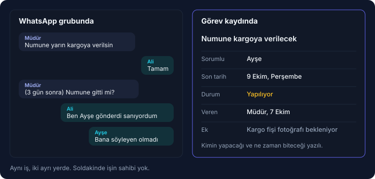
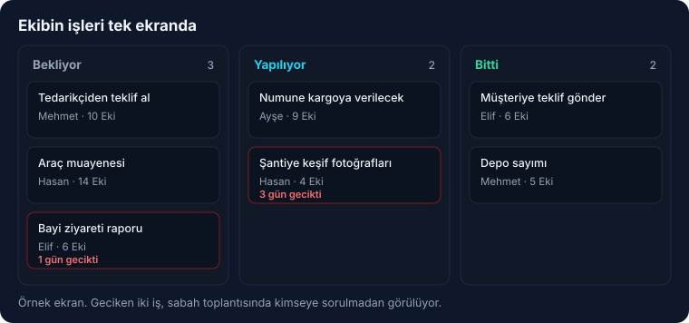

İşler neden takipsiz kalıyor? Görev yönetimi yazılımı ne işe yarar
Bir firmada işlerin çoğu sözle verilir. Koridorda söylenir, telefonda rica edilir, WhatsApp grubuna yazılır. Verilen işlerin bir kısmı yapılır, bir kısmı unutulur, bir kısmı için de üç gün sonra "o iş ne oldu?" diye sorulur. Bu yazı, işlerin neden takipsiz kaldığını ve görev yönetimi yazılımının buna nasıl çare olduğunu anlatıyor.

İş nerede kayboluyor?
WhatsApp grubu iş vermek için kullanışlı görünür, çünkü herkes oradadır. Ama gruba günde yüz mesaj düşer. Sabah yazılan "şu numuneyi kargoya verelim" mesajı öğlene kadar ekranın çok yukarısında kalır. Mesajı gören üç kişiden her biri, diğerinin ilgilendiğini düşünür.
Sözle verilen işte durum daha da belirsiz. İşi veren, söylediğini hatırlar. İşi alan, ne zamana kadar istendiğini hatırlamaz ya da hiç duymamıştır. İkisinin de haklı olduğu bir tartışma çıkar ve kimin ne söylediği konuşulurken iş hâlâ yapılmamıştır.

Bunun tersi de olur: aynı işi iki kişi birden yapar. Müşteriye iki ayrı teklif gider, tedarikçi iki kez aranır. Dışarıdan bakan için dağınık bir firma görüntüsü oluşur.
Yöneticinin günü takiple geçiyor
İşler bir yerde yazılı olmadığında takip görevi yöneticinin hafızasına kalır. Sabah ilk iş herkese tek tek sorar: teklif gitti mi, araç muayeneye götürüldü mü, şantiyeden fotoğraflar geldi mi? Günün önemli bir kısmı böyle geçer.
Bu düzenin bir yan etkisi daha var. Yönetici sormayı unuttuğunda iş de unutulur. Ekip zamanla, sorulmayan işin acil olmadığını öğrenir.
Birisi işten ayrıldığında ya da yıllık izne çıktığında da aynı boşluk ortaya çıkar. Üzerinde hangi işlerin olduğu yalnızca kendi telefonunda ve kendi aklındadır. Yerine bakan kişi sıfırdan başlar, müşteriye verilen sözler arada kaynar.
Görev yönetimi yazılımı neyi değiştiriyor?
Yaptığı şey basit: her işi bir kayda çeviriyor. Kayıtta dört şey bulunur: iş ne, kim yapacak, ne zamana kadar, şu an ne durumda. Bu dört bilgi yazılı olduğunda yukarıdaki sorunların çoğu kendiliğinden ortadan kalkıyor.
İşi alan kişi telefonunda kendi listesini görür. Bugün ne yapması gerektiği, hangisinin geciktiği bellidir. İşi bitirdiğinde işaretler, gerekiyorsa fotoğraf ya da belge ekler.
İşi veren kişi sormak zorunda kalmaz. Ekranı açar, kimde ne var, hangisi bitti, hangisi gecikti, görür. Sabah toplantısı kısalır, yalnızca takılan işler konuşulur.

Tekrarlayan işler de buraya girer. Aylık sayım, haftalık bayi ziyareti, araç muayenesi, sözleşme yenileme gibi işler bir kez tanımlanır, günü gelince ilgili kişinin listesine kendiliğinden düşer. Bunları hatırlamak artık kimsenin görevi olmaz.
Sahada çalışan ekipler için
Servis, montaj, saha satışı gibi işlerde ekip günün çoğunu dışarıda geçirir. Sabah sözle dağıtılan işlerin akşam ne kadarının yapıldığını öğrenmek için herkesin dönmesini beklersiniz.
Görevler telefona gittiğinde saha ekibi sıradaki işi, adresi ve müşteri notunu yanında taşır. İşi bitirince fotoğrafını çeker, gerekiyorsa müşteriye imza attırır. Ofis aynı anda görür. Müşteri aradığında "ekibimiz yarım saat önce çıktı, iş tamamlandı" diyebilirsiniz.
Ekip bunu denetim olarak görür mü?
İlk tepki çoğu zaman bu yönde oluyor ve ciddiye almak gerekiyor. Sistemi yalnızca kimin geciktiğini görmek için kullanırsanız ekip en kısa sürede işaretleyip geçmenin yolunu bulur.
İşe yarayan yaklaşım, sistemin önce çalışanın işini kolaylaştırması. Kendi işlerini tek listede görmek, "bana söylenmedi" tartışmasından kurtulmak, izne çıkarken işlerini düzgünce devredebilmek çalışan için de rahatlık. Biz kurulumlarda ilk hafta yalnızca bunu hedefliyoruz. Raporlar ve gecikme takibi sonra geliyor.
Nasıl başlanır?
Tek bir ekiple ve tek bir kuralla başlayın: iş, sisteme yazıldıysa verilmiş sayılır. Sözle söylenen ya da gruba yazılan iş de sonradan sisteme girilir. Bu kural iki hafta tutarsa gerisi kolay.
Başta kategori, öncelik, etiket gibi ayrıntılarla uğraşmayın. İş, kişi ve tarih yeterli. Ekip alıştıkça ihtiyaç duyduğunuz alanları eklersiniz.
Araç konusunda seçenek bol. Yalnızca görev takibi yapan hafif uygulamalar var, müşteri ve teklif kayıtlarıyla birlikte çalışan sistemler var. Görevleriniz müşteriye, siparişe ya da projeye bağlıysa ikinci türe bakmak gerekir (bkz. CRM ile görev yönetimi nedir?). Aksi halde aynı bilgiyi iki ayrı yere yazarsınız.
Sık sorulan sorular
WhatsApp'ı tamamen bırakmak mı gerekiyor?
Hayır. Yazışma için kullanmaya devam edebilirsiniz. Değişen tek şey, işin kendisinin mesajda kalmayıp kayda geçmesi.
On kişilik bir firma için fazla olmaz mı?
On kişi, günde otuz kırk ayrı iş demek. Bir kişinin hepsini aklında tutması zaten mümkün değil. Bu ölçekte sade bir araç fazlasıyla yeter.
Ekip kullanmazsa ne olur?
Yönetici kullanmıyorsa ekip de kullanmaz. İşler sistemden veriliyor ve durum sistemden takip ediliyorsa, birkaç hafta içinde alışkanlık oluşuyor.
İlgili hizmetlerimiz: görev yönetimi ve saha ekip uygulaması, dijital dönüşüm danışmanlığı.
Görev takip şablonu
Kim, ne iş, ne zamana kadar; geciken iş kırmızı, kişi başına özet. Ücretsiz Excel şablonu.
Şablonlara bakEkibinizin işlerini görünür kılalım
İşlerin bugün nasıl verildiğini ve takip edildiğini birlikte çıkaralım.
Projenizi Konuşalım